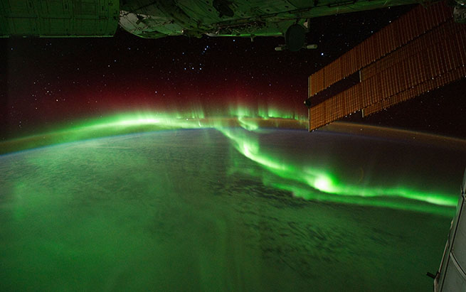

|  |
The magnetic field of the Earth pushes most of the ions around itself. However, it pushes some ions toward the north and south pole where they are able to enter the upper parts of our atmosphere. The result is one of the most spectacular and beautiful phenomena on Earth – the northern and southern lights. These "auroras" are like dancing light shows.
|